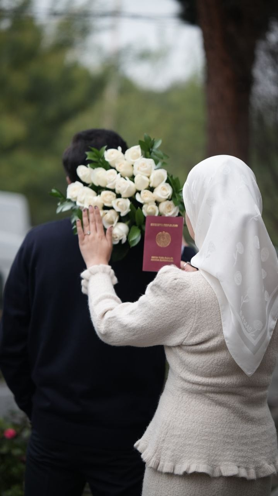
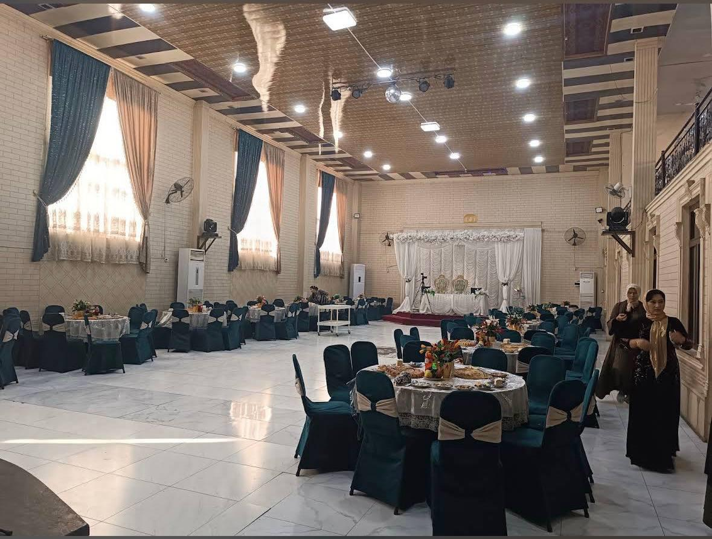

25 OKTABR 2026
Siz uchun
taklifnoma
Go‘zal kunimizning aziz mehmoni bo‘ling.
IKKI QALB. BIR HAYOT. BIR GO‘ZAL BOSHLANISH.

Bir umrgabirga.
01 / BIZNING HIKOYAMIZBISMILLAHIR ROHMANIR ROHIYM
Assalomu alaykum, azizlar!
Sardorbek&Gulsevar
Hayotimizning eng go‘zal sahifasi ochilayotgan kunda sizni yonimizda ko‘rishdan mamnun bo‘lamiz.
Sizni nikoh to‘yimizga taklif etamiz.
Quvonchimizga sherik bo‘ling!
BIZNING KUNIMIZ
25Oktabr 2026
YAKSHANBA
✧
12:00 — 14:00
TOSHKENT VAQTI BILAN
UCHRASHUVGA OZ QOLDI
Har bir lahza
siz bilan go‘zal.
00kun
00soat
00daqiqa
00soniya
Birga nishonlaydigan kunimizga qadar.
KUNIMIZNING GO‘ZAL LAHZALARI
Unutilmas lahzalar.
BIRGA YANGI HAYOT SARI
Sevgi bilan yozilgan
yangi sahifa.
S&G
♡
S&G
SURATLARNI SURING
“Eng go‘zal manzil — birga boshlangan hayot.”
SIZNI SHU YERDA KUTAMIZ
Zulfiya to‘yxonasi

QALBDAN QALBGA
Bir og‘iz tilak,
bir olam quvonch.
Samimiy tilaklaringiz yangi hayotimizning
eng go‘zal esdaligi bo‘lib qoladi.